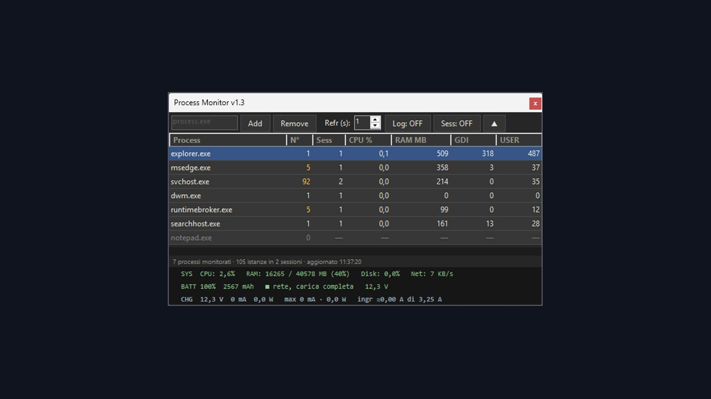

PROCESS MONITOR

SCARICA PER WINDOWSun file solo, niente da installare · .exeA cosa serve
Sorveglia un elenco di programmi scelti da te e mostra, aggiornati di continuo, quanta CPU e quanta memoria stanno usando e quanti handle GDI e USER hanno aperto.
Gli handle sono il motivo per cui un gestionale lasciato aperto tutto il giorno a un certo punto smette di disegnare finestre e menu: Windows ne concede un numero limitato a ogni processo, e il consumo cresce pian piano senza che nessuno se ne accorga. Qui si vede salire. Quando un valore supera la soglia la riga diventa rossa e l'evento finisce nel registro, con l'ora e per quanto tempo e' durato.
Rispetto a Gestione attivita' somma tutte le istanze della stessa applicazione e le separa per sessione di Windows: quante volte e' aperta e da quale utente, anche quando l'ha avviata un altro utente collegato allo stesso computer.
Sui portatili mostra anche la batteria: carica residua in percentuale e in mAh, corrente di carica o di scarica in mA e in watt, con un allarme se la carica supera le soglie.
Come si installa
- Scarica ProcessMonitor.exe e mettilo in una cartella qualsiasi: non c'e' niente da installare.
- Serve Windows con .NET Framework 4.8, presente di serie da Windows 10 versione 1903 in avanti e su Windows 11.
- All'avvio chiede i permessi di amministratore: servono per leggere i processi degli altri utenti.
- La prima volta Windows avvisa che non conosce il programma: Ulteriori informazioni → Esegui comunque. Succede a tutti i programmi senza firma commerciale.
- Alla chiusura crea accanto a se' il file
processes.xmlcon l'elenco dei programmi da sorvegliare, e se lo rilegge all'avvio dopo.
Come si usa
- Scrivi il nome dell'eseguibile, per esempio
notepad.exe, e premi Add; Remove toglie quello selezionato. - Refr (s) regola ogni quanti secondi aggiorna, da 1 a 60.
- Sess: ON apre sotto ogni programma il dettaglio per sessione: quante istanze, di quale utente, con CPU e memoria di quella sessione.
- Log: ON scrive gli eventi in un file
procmonitor_AAAAMMGG.logaccanto al programma, uno al giorno. - Il pulsante ▲ riduce la finestra a una riga sola, da lasciare in un angolo dello schermo. La finestra sta sempre davanti alle altre.
- In fondo, sempre visibili: CPU, memoria, disco e rete di tutto il sistema.